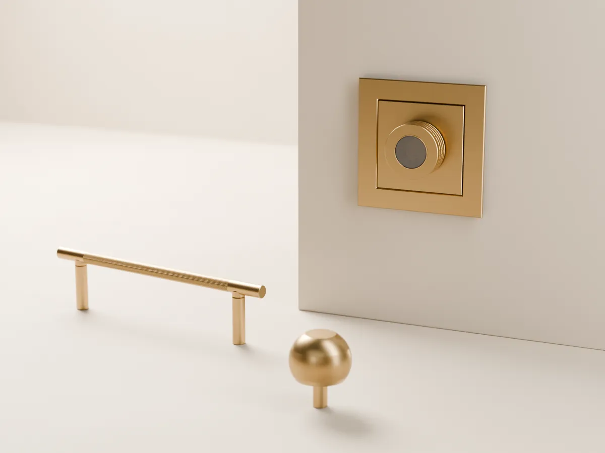
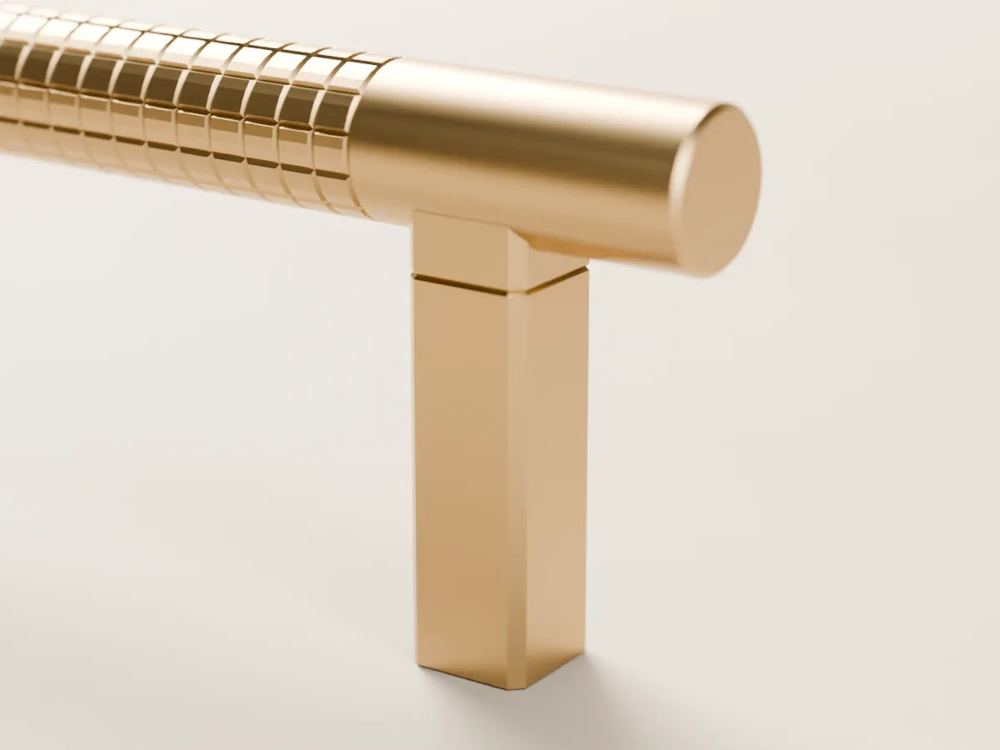
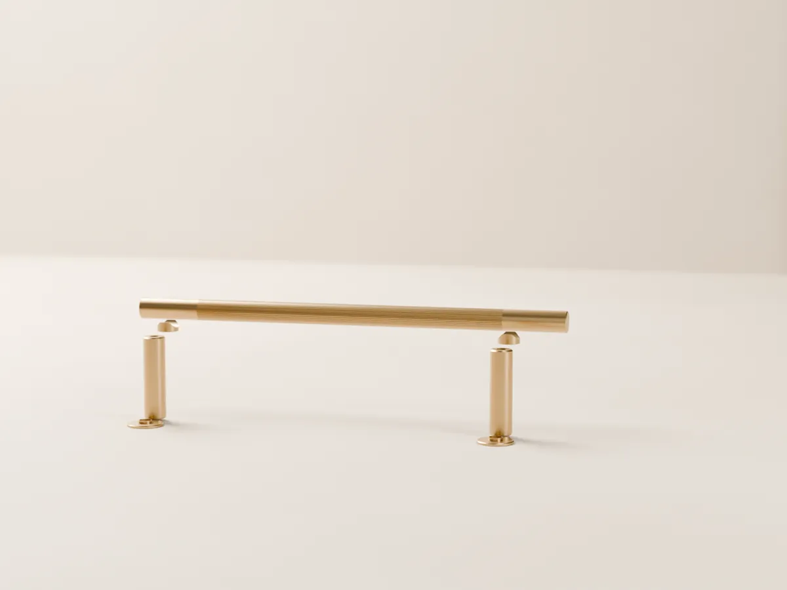

NOOK FORM · lity mosiądz
Detal, którego dotykasz codziennie.
Uchwyty, gałki i klamki z litego mosiądzu. Osiem kolekcji, jeden system – każdy element pasuje do każdego, dziś i za dwadzieścia lat.

Kolekcje
Osiem charakterów, jeden system
OTOCZAK
Miękkość rzecznego kamienia
4 produkty
PION
Czysta, architektoniczna linia
4 produkty
OBRĄCZKA
Pierścień jak w biżuterii
4 produkty
OSIKA
Ciepło drewna w mosiężnej oprawie
4 produkty
KASKADA
Schodkowy rytm art déco
4 produkty
FINE LINE
Linia, która łapie światło
12 produktów
RILL
Ryfle tam, gdzie kładziesz palce
12 produktów
GRID
Delikatna krata pod opuszkami
7 produktów

Dotyk
Ciężar, chłód, potem ciepło dłoni.
Każdy element jest z pełnego mosiądzu – bez pustych korpusów i odlewów z cynku. Linie, ryfle i krata są wycięte tam, gdzie kładziesz palce, a mosiądz bez powłoki z latami nabiera głębi.
Materiał i wykończenia
Jeden system
Jeden gwint, nieskończenie wiele kompozycji.
- FormaWybierz uchwyt, gałkę lub klamkę z dowolnej z ośmiu kolekcji.
- Nóżki i podkładkiDobierz wysokość, kształt i wykończenie – także z innej kolekcji.
- Na lataGdy zechcesz zmiany, wymienisz jeden element, nie cały uchwyt – bez nowych otworów.
Elektryka
Ramki i pokrętła w tym samym języku
Ramki 1-, 2- i 3-krotne na standardową puszkę, gniazda Schuko i typu E, pokrętła ściemniaczy RILL i GRID – ryflowane albo gładkie, w wykończeniach uchwytów.
Wykończenia
Siedem wykończeń, jeden mosiądz
SBmosiądz satynowyPBmosiądz polerowanyABmosiądz postarzanyAB-Rpostarzany z reliefemMBczarny matWHciepła bielNKnikiel szczotkowany
Zamów próbki wykończeń
Płytki wykończeń i moduły do porównania – zanim zdecydujesz.